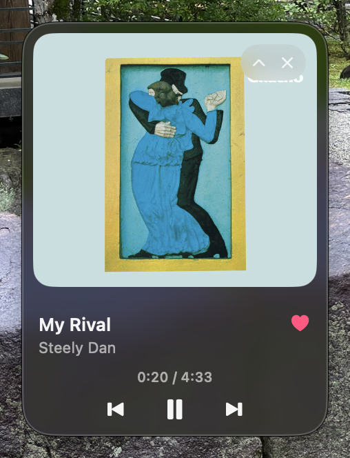
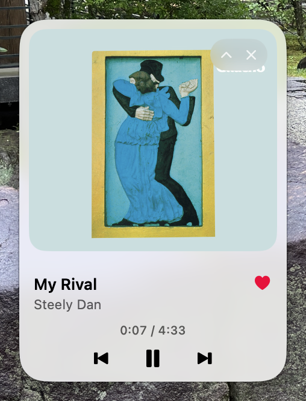
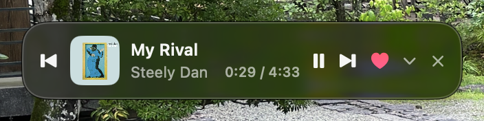
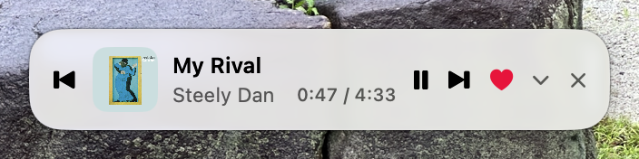

A small, always-on-top, draggable panel showing what's playing on Spotify — with playback controls and a one-click button to add the current song to your Liked Songs. No Dock icon, no browser tab, just the track.
🚧 Alpha — v1.0.0 is a first, working-but-rough cut. Expect bugs and breaking changes before a stable 1.0.
Real screenshots of the Liquid Glass theme on the desktop — it follows light and dark mode, and picks up whatever is behind it.




Nothing more than a mini player needs.
Drag it anywhere on screen. Stays on top of other windows, on every Space.
Toggle layouts with the chevron on the panel itself — a slim bar or a full album-art view.
Track, artist, and artwork read straight from the Spotify desktop app. Long titles scroll in a looping marquee.
Previous, play/pause, next — right from the panel, no need to switch to Spotify.
The heart button adds the current track and reflects whether it's already liked.
Liquid Glass by default, or the original green Digital Archives look — switch in Settings or the menu. Both follow light and dark mode.
A close button on the panel, next to expand/collapse — no digging through the menu bar.
No Dock icon. Right-click the panel itself to reach Log In/Out, layout, theme, Settings, and Quit.
Requires macOS 13 or later, and the Spotify desktop app running.
brew tap peds24/tap brew trust peds24/tap brew install --cask da-miniplayer
Not notarized yet (no paid Apple Developer ID) — the cask clears the Gatekeeper quarantine flag on install so it opens normally.
DAMiniPlayer-v1.0.0.zip → /Applications
Download from the v1.0.0 release, unzip, and move DAMiniPlayer.app to /Applications. Since it's unsigned, right-click and choose "Open" the first time instead of double-clicking.
Liked Songs currently needs your Spotify account allow-listed by @peds24 (Spotify's Development Mode cap) — playback controls and now-playing info work for everyone. See the README for details.